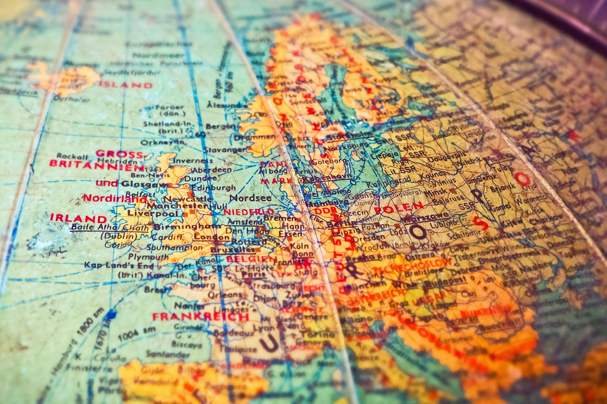

Európa országai lenyűgöző sokszínűséget képviselnek,
hiszen ezen a viszonylag kis méretű kontinensen több tucatnyi eltérő nyelvű,
kultúrájú és történelmi hátterű nemzet osztozik egymás mellett.
Míg a déli államok a napfényes mediterrán életérzéssel és az ókori romokkal bűvölik el a látogatókat,
addig az északi régiók a lenyűgöző természeti csodákkal és a modern,
innovatív jóléti társadalmakkal tűnnek ki.

Érdekességek
A világ legkisebb országa itt található: A Vatikán területe mindösszeg 0,44 négyzetkilométer, és az a különlegessége, hogy teljes egészében egy másik ország fővárosa, Róma öleli körbe.
Van egy európai ország, ahol egyáltalán nincsenek szúnyogok: Izland az egyik olyan ritka hely a Földön,g ahol a szokatlan éghajlati ingadozások és ökológiai viszonyok miatt nem tudtak megélni és elszaporodni ezek a rovarok. Tudj meg többet!